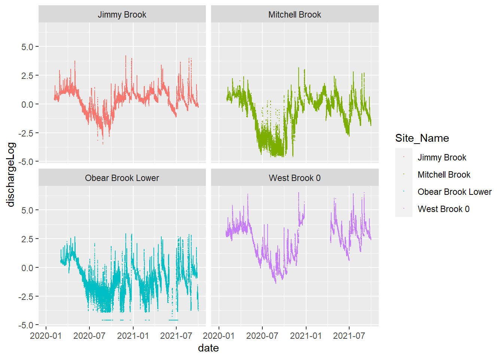

Code
dataFlow <- tar_read(dataFlow_target)
dFlow <- tar_read(dFlow_target)
dFlowWide <- tar_read(dFlowWide_target)dataFlow <- tar_read(dataFlow_target)
dFlow <- tar_read(dFlow_target)
dFlowWide <- tar_read(dFlowWide_target)tibble(dataFlow)# A tibble: 582,388 × 9
Station_No Site_Name DateTime_EST GageHeight_Hobo_ft Discharge_Hobo_cfs
<int> <chr> <chr> <dbl> <dbl>
1 1171000 Avery Brook 2/20/2020 0:00 4.17 5.37
2 1171000 Avery Brook 2/20/2020 0:15 4.17 5.3
3 1171000 Avery Brook 2/20/2020 0:30 4.16 5.17
4 1171000 Avery Brook 2/20/2020 0:45 4.17 5.27
5 1171000 Avery Brook 2/20/2020 1:00 4.17 5.3
6 1171000 Avery Brook 2/20/2020 1:15 4.15 4.94
7 1171000 Avery Brook 2/20/2020 1:30 4.13 4.56
8 1171000 Avery Brook 2/20/2020 1:45 4.1 4.14
9 1171000 Avery Brook 2/20/2020 2:00 4.08 3.84
10 1171000 Avery Brook 2/20/2020 2:15 4.09 4.02
# ℹ 582,378 more rows
# ℹ 4 more variables: WaterTemperature_HOBO_DegF <dbl>, AirPressure_PSI <dbl>,
# AirTemperature_HOBO_degF <dbl>, X <lgl>table(dataFlow$Site_Name)
Avery Brook Jimmy Brook Mitchell Brook
56536 57849 56978
Obear Brook Lower Sanderson Brook West Brook 0
60392 55336 58548
West Brook Lower West Brook Reservoir West Brook Upper
61279 61059 57301
West Whately Brook
57110 #check for real entries
dFlow %>% filter(is.infinite(dischargeLog)) [1] Station_No Site_Name
[3] DateTime_EST GageHeight_Hobo_ft
[5] Discharge_Hobo_cfs WaterTemperature_HOBO_DegF
[7] AirPressure_PSI AirTemperature_HOBO_degF
[9] X date
[11] site dischargeLog
<0 rows> (or 0-length row.names)ggplot(dFlow, aes(date, dischargeLog, color = Site_Name)) +
geom_point(size = 0.02) +
facet_wrap(~Site_Name)
ggpairs(dFlowWide,
columns = 6:9,
mapping = ggplot2::aes(color = as.factor(year), alpha = 0.7),
#diag = list(continuous = myDens),
lower = list(continuous = wrap("points", alpha = 0.3, size=0.1),
combo = wrap("dot", alpha = 0.4, size=0.2))
)ggpairs(dFlowWide %>% filter(yday > 90, yday < 300),
columns = 6:9,
mapping = ggplot2::aes(color = as.factor(year)),
lower = list(continuous = wrap("points", alpha = 0.3, size=0.1),
combo = wrap("dot", alpha = 0.4, size=0.2))
)ggpairs(dFlowWide %>% filter(yday == 110),
columns = 8:11,
mapping = ggplot2::aes(color = as.factor(year)),
lower = list(continuous = wrap("points", alpha = 0.3, size=0.2),
combo = wrap("dot", alpha = 0.4, size=0.2))
)